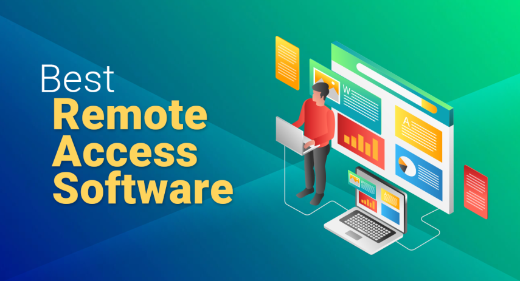

The Best Remote Access Software for 2025
James McGill | Updated on February 4th 2023Privacy and Technology Consultant In a hurry? Here’s the top Remote Access Software for 2025:
Love it or loathe it there’s no denying it, the way we work has radically changed over the past two years. The pandemic forced employees and employers alike to adapt at a lightning-fast pace and as we take stock of the post-covid work scape there’s only one question on everybody’s mind: home or office?
Given the choice between working from home or the office, 61% of Americans opt for home-working. This is in stark contrast with approximately 50% of companies that would prefer to have their employees return to the office full-time.
The compromise? Hybrid working. Almost ¾ of U.S. companies have or intend to implement a hybrid work model. That’s a staggering statistic considering the percentage was less than half pre-pandemic. When you think about it though, it makes sense. Now employees and employers can experience the best of both worlds: greater work-life balance without sacrificing collaboration.
Unfortunately, solutions are rarely perfect and although the hybrid model has rectified a lot of issues, it has also introduced numerous additional logistical and operational challenges, including:
- Providing IT support for remote employees
- Ensuring data is secure
- Collaboration across teams
- Access to essential software
- Hardware limitations of home setups
- Sharing files between the home and the offices
All of these issues have the potential to seriously hamper productivity. This is where remote access software really comes into its own - bridging the divide between the home and the office and transforming both into a single harmonious space. Remote access: once optional, now an operational necessity.
An overview of the best Remote Access Software for 2025:
What is Remote Access Software and What are the Benefits?
Remote access allows you to connect the device in front of you to another device anywhere in the world. Going beyond basic screen mirroring, remote access can give you complete access to the connected device, including all its software, hardware, and peripheries.
In practice, that means you could use applications such as Microsoft Office or Photoshop at home without needing to download them onto your personal device - simply connect to your work machine and you’re away. It also means you never have to worry about leaving files at home again, remote access can open any document wirelessly. For IT support the potential is also huge. Troubleshooting can be done remotely by handing over device access to a technician - worlds apart physically yet sat beside you practically.
Whether you are a one-person team or a leader of 100s, here are some of the essential features to consider when choosing your best-fit solution:
- The number of devices. Some services offer licenses for a single device while others cover 100s. Make sure to consider the size of your team before making a decision.
- Automatic wake function. If you are hybrid working, chances are you don’t leave your home computer turned on while working in-office and vice-versa. Wake on WAN (or LAN) allows you to turn a device on remotely, without the need for somebody to physically press the power button.
- File transfer. Another key benefit of remote access software is the ability to seamlessly access and transfer files between devices. Never worry about forgetting your USB stick or portable hard drive again. File transfer allows you to access your files from anywhere in the world.
- Operating system compatibility. Are your devices Apple, Microsoft, or Linux? Do you want your users to be able to access their computers using their phones and tablets? That’s possible with remote access software and opens the door to productivity beyond the desk.
- Collaboration features. Remote access software can elevate collaboration to a whole new level with a suite of additional features: screen sharing, instant messaging, live annotations, and file sharing. Remote team projects have never been easier.
- Productivity tracking. It can be difficult to keep track of productivity when employees are scattered everywhere, potentially internationally. Productivity tracking offers essential insight into how effectively company hours are being spent and what individuals are working on throughout the day.
Now that we know what we are looking for, let's explore three of our favorite remote access solutions for 2025.
How did we decide on our top Remote Access Software For 2025?
Many first-time buyers don't even know what to look for in a remote software app. It's totally understandable; after all, remote working wasn't exactly a thing until the pandemic forced everyone out of their offices and workplaces. No worries, our team tested a bunch of remote access software so you can avoid the pitfalls of choosing the wrong software solution for your business. Below are some factors that influenced our top 10 recommendations:
- Security: This should be your #1 consideration. We opted for remote access solutions that offer end-to-end encryptions, multi-level authentication and authorization steps, audit logs, a zero-trust network, and automated security updates.
- Functionalities: We looked for providers with all the essential features, including file sharing, remote file management, screen sharing, unattended remote access, remote printing, multi-session handling, and built-in chat.
- Usability: We kept in mind that not every employee is tech-savvy, so we chose solutions that are easy to use and understand.
- Performance: We made sure to select tools that can perform reliably and give that in-person experience regardless of location: home, cafe, hotel, or anything in between.
- Customer Support: Sooner or later, you will need customer support. We made sure to go with providers that have a stellar customer service reputation.
Remote Access Software - Frequently Asked Questions (FAQ)
👫 Who can benefit from remote access software?
Remote access software can be beneficial for an individual user as well as a larger company. For the individual, it allows for seamless syncing of different devices and worry-free access to all your important files, anywhere, at any time. For the company, remote access can hugely streamline a range of processes including; IT support, productivity monitoring, collaboration, and hardware/software setup.
💻 Why does IT support need remote access software?
Trying to guide a user through technical and complex troubleshooting is typically hugely inefficient. It is far simpler to hand over device access to a technician who can then complete the necessary steps themselves, in essence cutting out the middle man. Remote access can also allow IT to perform necessary updates, download essential software, and check the suitability of home/work devices.
🔐 Is remote access software secure?
As remote access involves connecting devices over a wireless network it is important to practice safe digital security measures. Ensure any connection is encrypted with a strong password only accessible by trusted users. Consider only allowing access to trusted devices and avoid using public Wi-Fi, at least without first enabling a VPN.
🖥 Can I use free remote access software?
Free software is available with limitations. Many lack basic functions such as file sharing and are limited to a low number of devices. Advanced options such as collaborative features and productivity tracking are typically limited to paid models. For the basic user, free software may serve a limited purpose, though there really is no replacement for premium remote access software.
Transparency and Trust: The aim of this website is to help you find the perfect software for your needs in an easy-to-view comparison list. You can read more about how we review and about our background in the About Us section of this website. Software.fish does not feature all of the software available in the market, we cherry-pick what we consider to be the leaders in each vertical. We try to keep this site updated and fresh, but cannot guarantee the accuracy of the information as well as the prices featured at all times. All prices quoted on this site are based on USD so there could be slight discrepancies due to currency fluctuations. Although the site is free to use, we do earn commissions from the software companies that we have partnered with. If you click on one of our links and then make a purchase, we will get paid by that company. This has an impact on the ranking, score, and order in which the software is presented in our list and elsewhere throughout the site. Software listings on this page DO NOT imply endorsement.